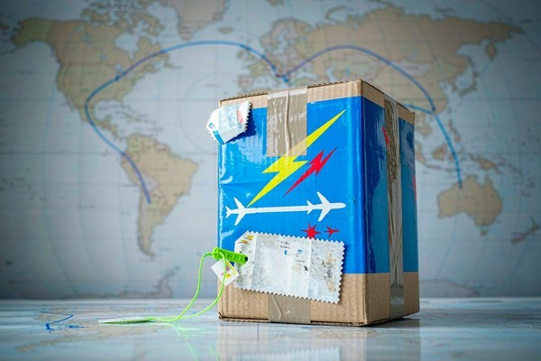
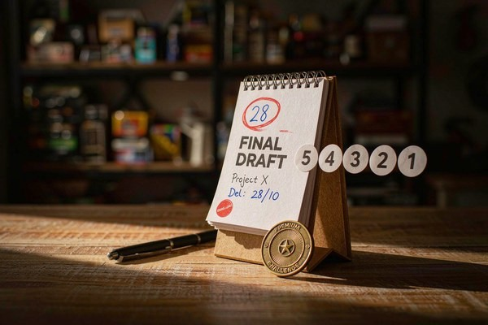

The Seven Stages of a Coin Order, and Where Days Get Lost
A coin order is not one task. It is seven, strung together, and the total time is the sum of the slowest links plus whatever slipped. Knowing which link is usually the slow one changes how you plan.
- Artwork and proof. In-house design can turn a proof around in a day. The variable here is you: every revision round trips a day or two, because this is the only stage in the whole chain that is waiting on the customer instead of the factory.
- Die cutting. The steel mold gets cut for your design, typically a day or two. It is a one-time step — once cut, the die is stored and your reorders skip it entirely.
- Base striking. The metal is cast or stamped into blanks and struck with your die, a few days for a production batch.
- Enamel fill and cure. Soft enamel is the quick path; hard enamel needs extra grinding and polishing passes to sit flush, which is where its extra days come from.
- Plating. A day or two for a standard finish, longer for dual or specialty plating that needs extra masking and bath time.
- QC and packaging. Individual inspection and packing, usually a day or two.
- Shipping. The wildcard. Domestic freight is predictable; international freight is a chain of carriers, customs, and weather that no maker controls.
The pattern is consistent across shops: production stages are tightly run and predictable, while the two places days disappear are the proof loop and the shipping leg. If a coin is late, it is almost never because the press was slow. It is because the proof bounced a few times, or because shipping was treated as a footnote.
Standard Timelines by Style: Enamel vs 3D vs Minted
Style is the next biggest lever after approvals. These are production-plus-typical-shipping ranges for a standard order with art already approved — your own responsiveness is the variable on top.

- Soft enamel. The fastest, roughly 10 to 15 days including shipping, because the recessed enamel needs no flattening.
- Hard enamel. Add two to three days for the grinding and polishing that makes the surface glass-smooth.
- 3D or sculpted. Add two to four days for the deeper die and a heavier strike.
- Minted or prooflike. Add a day or two of extra buffing for the mirror finish.
- UV printed. Can be quicker on the print step, but it still needs the same metal base and plating, so the total rarely collapses.
None of these numbers move until you do. A simple soft enamel run with a signed-off proof sits at the short end; a sculpted, dual-plated coin with three proof rounds sits at the long end. The style sets the floor, your approval speed sets where you land above it.
What 'Rush' Really Means: Production vs Shipping
"Rush" is two different purchases, and confusing them is how people overpay and still miss the date. Rush production compresses the make time — the shop runs your job on overtime or jumps the queue. Rush shipping compresses the freight leg — overnight or express carriage instead of ocean or ground. They are independent, and only one of them touches the factory clock.
The classic mistake is paying for rush production and then choosing slow shipping, or the reverse: express freight on a coin that will not be struck for another week is just an expensive box waiting at the airport. The "24 hour coin" claims you see advertised are almost always 24 hour production plus overnight shipping, and they only work for straightforward designs with art approved before the clock starts. For a realistic compressed run, production in the 3 to 7 day range is what rush actually buys you when you push hard.
The premium scales with how much you compress the timeline. A little queue priority costs a little; jumping everyone and running overtime costs meaningfully more. Rush is a legitimate tool for a blown deadline, not a substitute for ordering early — and it does nothing for the approval loop if you are still editing the proof.
How to Compress a Timeline Without Paying Rush Fees
Most of the time you do not need rush at all. You need to stop leaking days at the two soft spots — proof and shipping — and to pick a style that matches your deadline.
- Approve the proof fast. Prepare your art before you order, decide colors up front, and treat the proof as a final check, not a design session. Each round you skip is a day or two back in your pocket.
- Choose a fast style. When the deadline is tight, soft enamel beats hard enamel and 3D beats neither on speed. Match the finish to the calendar.
- Consolidate into one shipment. Splitting a run into multiple parcels multiplies freight handoffs and risk.
- Book production early, even if delivery is months out. Many buyers stagger the order date from the needed date; if you can, order early and hold inventory. The coin waits cheaply; the deadline does not.
- Use a maker with in-house design. A shop that draws in-house proofs faster, which shortens the one stage that waits on you.
- Avoid custom shapes, cutouts, and dual plating when time-crunched. They are the style choices that add the most days.
Every one of these is free. They are scheduling discipline, not money. Our breakdown of what drives coin pricing assumes a responsive partner and a sensible timeline; the cost side and the time side are the same conversation.
A Backwards Planning Calendar for Fixed-Date Events
When the event date is fixed, plan backwards and put the buffers where they belong. Start from the date you need coins in hand, then subtract in this order: a shipping buffer first, then production time, then a proof and approval window, and keep a one-week shock absorber for customs or weather.
A worked example: an event on November 30. Ship by November 22 to absorb an international freight slowdown. Production done by November 15. Proof approved by November 10, leaving a revision or two. Order placed by November 5. That is roughly four weeks of runway for a standard style — and the shock absorber is what keeps a customs hold from becoming a missed ceremony.

When your calendar is already shorter than that, rush becomes the only lever — and now you know which kind you need. If production is the constraint, buy rush production. If freight is, buy express shipping. If both, buy both, and accept that the premium scales with how hard you are compressing. The calendar does not care how the delay happened; it only cares what you do next.
Want a Timeline You Can Actually Trust?
Tell us your event date and we will work the backwards calendar with you, flag the rush option only if you need it, and hand you a free digital proof in 12 hours so the approval clock starts today.
Get Free QuoteFrequently Asked Questions
How long do custom challenge coins take on average?
For a standard soft enamel coin with approved artwork, plan on roughly 10 to 15 days from order to delivery, counting production and typical shipping. Hard enamel, 3D, and minted finishes add a few days each, and international freight adds more than domestic. The single biggest variable is you: every round of proof revisions pushes the calendar by a day or two, because that is the only stage waiting on the customer.
What is the fastest I can realistically get challenge coins?
With artwork already approved and a simple design, compressed production can land in the 3 to 7 day range, and express freight can put the box in your hands within a couple of days after that. The 24 hour coin claims you see advertised are almost always 24 hour production plus overnight shipping, and they only work for straightforward designs with art that is signed off before the clock starts. Anything with custom shaping, dual plating, or a fresh sculpted die will not hit that window.
Does rush production actually save time, or just cost more?
It saves real time on the make side, because rush means the shop runs your job on overtime or jumps the queue, but it only shortens the production link. It does nothing for shipping, and it does nothing for the approval loop if you are still editing the proof. The premium scales with how much you compress the timeline, so the more aggressive the rush, the steeper the multiple. Rush is a legitimate tool for a blown deadline, not a substitute for ordering early.
Why does shipping sometimes take longer than production?
Because production is a controlled factory process with a known duration, while shipping is a chain of carriers, customs, and weather that no coin maker controls. International freight routinely takes longer than the strike itself, and customs holds or a missed flight can erase a week. Treating shipping as an afterthought is the most common reason coins miss an event date even when production finished on time.
Do different coin styles take different amounts of time?
Yes. Soft enamel is the fastest because the enamel sits recessed and needs no flattening. Hard enamel adds a few days for the grinding and polishing that makes the surface glass-smooth. A 3D or sculpted coin adds time for the deeper die and strike, and minted or prooflike finishes add extra buffing. UV printed coins can be quicker on the print step but still need the same metal base and plating, so the total rarely collapses.
How far in advance should I order coins for a fixed-date event?
Work backwards from the event: subtract a shipping buffer first, then production time, then a proof and approval window, and keep a one-week shock absorber for customs or weather. For an international delivery, that usually means placing the order four to five weeks out for a standard style. If your calendar is already shorter than that, rush becomes the only lever, and you will want to know whether you need rush production, rush shipping, or both.
Can I speed up my order without paying a rush fee?
Often yes. Approve the proof quickly, choose a faster style like soft enamel, consolidate into one shipment, and order earlier than you need delivery so you are not racing the clock. The days lost to proof revisions and slow shipping are free to recover, and they are where most late orders actually go wrong.